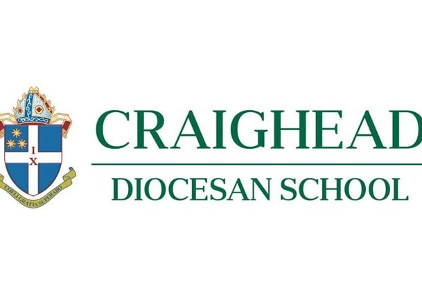

<!DOCTYPE html>
<html lang="en">

</html>
  
  <head>
    <meta charset="utf-8">
    <meta name="viewport" content="width=device-width">
    
    <!-- TAB TEXT -->
    <title>Craighead  Newsletter</title>
    
    <!-- FONTS -->
    <link rel="preconnect" href="https://fonts.gstatic.com">
    <link rel="stylesheet" href="https://fonts.googleapis.com/css2?family=Stick&family=Akaya+Telivigala&family=Roboto&display=swap">
    
    <!-- MY CSS -->
    <link rel="stylesheet" href="../css/layout3.css">
    <link rel="stylesheet" href="../css/style3.css">
  </head>
  
  <body>
    
    <header>
      
      <h1>Sports</h1>
    </header>
    
    <nav>
            <a href="index.html"> home page</a>
            <a href="Notices.html">Notices</a>
            <a href="school trips.html">School Trips</a>
            <a href="html/Sports.html">Sports</a>
    </nav>
    
    <main>
      <h2>Champion House Cup:</h2>
        <p>
            
            <ul>
                <li>1st Te Uru</li> 910 points
                <li>2nd Te Tonga</li> 741 points
                <li>3rd Te Rawhiti</li> 726 points
            </ul>
        </p>
        <h2>Athletics Results:</h2>
        <p>
            
        <li> Overall Champion Runner Up- Jessica Vogel </li>
        <li>Welford Family Cup for Overall Champion - Sienna Wright</li>
        
        <li>Senior Field Events Runner-Up - Ava Young</li>
        <li>Johanna Williamson (Reith) Cup for Senior Field Events Alexandra Williamson</li>
        
        <li>Minor Champion Runner-Up - Keira Shannon</li>
        <li>Kirk Cup Overall Minor Champion - Sienna Wright</li>
        <li>Junior Champion Runner-Up - Orla Motley</li>
        <li>Mr & Mrs JEN Quaife Cup Overall Junior Champion - Charlotte Blake</li>
        <li>Intermediate Champion Runner-Up - Madeline Thomas</li>
        <li>Mrs Gilbert Grigg Challenge Cup Overall Champion - Niamh Motley</li>
        <li>Senior Champion Runner-Up - Ava Young</li>
        <li>Dr & Mrs Shackleton Challenge Cup Overall Senior Champion -Jessica Vogel</li>
        
        Craighead Junior Athletics Champion Charlotte Blake was the youngest competitor at the Canterbury Senior Athletics Championships, held in February.  Charlotte won the Girls’ U16 Javelin, Shot put and Discus finals, an outstanding effort across three events against girls much older than she.
        
        She also took part in the Canterbury Quadrathon, a mini Pentathlon / Heptathlon, where athletes compete in four events over 3 1/2 hours, the winner being the athlete who performs to the highest standard across all four disciplines. Charlotte won her division against 36 competitors, with a total of 2096 points.
        
    </p>
    
    </main>
    
    <footer>
      <p>
        &copy; School 2021
      </p>
    </footer>
    
  </body>
  
</html>
